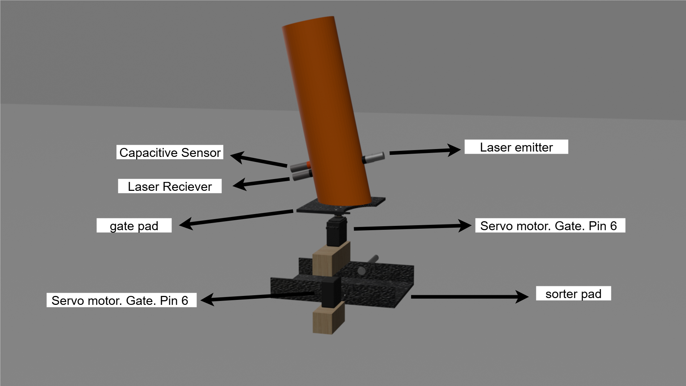
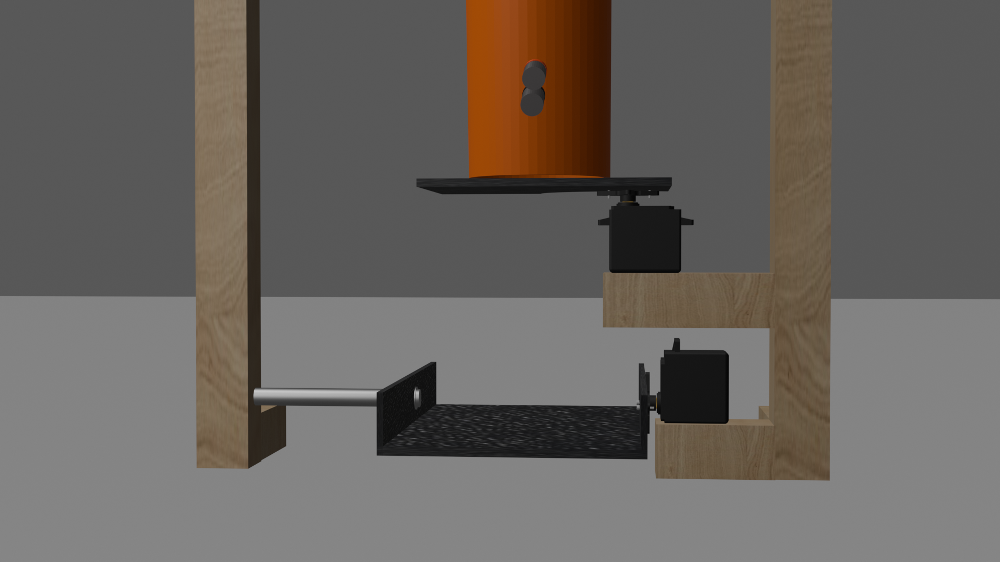

📌 Wiring Diagram
Follow this wiring diagram carefully:

Step-by-step guide with wiring, code, 3D model, and components list
The Bottle to Wi-Fi Voucher Reverse Vending Machine dispenses Wi-Fi vouchers as a reward in exchange for plastic bottles and cans, promoting recycling and waste reduction.
System Process:
The system operates when a plastic bottle is inserted into the slot. Once the laser sensor detects the object, the system verifies whether it is a valid 500 ml plastic bottle or an invalid item such as a can or organic waste using capacitive sensor. All processes are displayed on the LCD screen, including verification status, valid bottle count, voucher dispensing, and RFID access (valid or invalid) for unlocking the panel board as a safety measure. When the threshold is reached, the LCD prompts the client to redeem their reward by pressing a push button, which triggers the thermal printer to dispense a Wi-Fi voucher. Vouchers are managed through an ESP32 SoftAP mode web server, where administrators can monitor system data, upload up to a thousand voucher codes, and delete any incorrect entries.
➤ Arduino Mega
➤ ESP32
➤ 12v power supply (for Laser and capacitive sensor)
➤ E3F-20L Laser NPN type reciever
➤ E3F-20C1 Laser emitter
➤ MG996R Metal gear servo motor (2)
➤ Capacitive sensor PNP type
➤ RFID reader MFRC-522
➤ 20x4 i2c LCD
➤ Solenoid lock
➤ Thermal Printer
➤ 10k and 6.8k ohms resistor
➤ Jumper wire
Follow this wiring diagram carefully:
place your sesors and servo motors as shown
place your servo motors like this
This is just my most basic idea of sorting mechanisim, you can use another method.
The servo will turn 90 degrees idle position.
While in idle posotion screw your gate and sorter pad. Pads are those plain pad your servo motor is holding.
In #include "<" I remove this part on all libraries since the libraries disapear as i put complete the libraries. Just put "<" and its all good.
#include Servo.h>
Servo servoGate,servoSorter;
void setup() {
servoGate.attach(5);
servoSorter.attach(6);
delay(5000);
servoGate.write(90);
servoSorter.write(90);
}
void loop() {
}
In #include "<" I remove this part on all libraries since the libraries disapear as i put complete the libraries. Just put "<" and its all good.
#include SPI.h>
#include MFRC522.h>
#include Keypad.h>
#define RELAY_PIN 7
MFRC522 mfrc(10, 9);
const byte ROWS = 4;
const byte COLS = 4;
char keys[ROWS][COLS] = {
{'1','2','3','A'},
{'4','5','6','B'},
{'7','8','9','C'},
{'*','0','#','D'}
};
byte rowPins[ROWS] = {A0, A1, A2, A3};
byte colPins[COLS] = {2, 3, 4, 5};
Keypad keypad = Keypad( makeKeymap(keys), rowPins, colPins, ROWS, COLS );
String pinBuffer = "";
const String PIN_CODE = "99999";
const byte TARGET_UID[] = {0xA3, 0xAA, 0x3D, 0x38};
const byte TARGET_UID_LEN = 4;
bool relayState = false;
unsigned long lastRFIDToggle = 0;
const unsigned long RFID_DEBOUNCE_MS = 700;
void setup() {
Serial.begin(9600);
SPI.begin();
mfrc.PCD_Init();
pinMode(RELAY_PIN, OUTPUT);
digitalWrite(RELAY_PIN, LOW);
Serial.println("tap mun o enter pass");
}
void loop() {
handleRFID();
handleKeypad();
}
void handleRFID() {
if (!mfrc.PICC_IsNewCardPresent()) return;
if (!mfrc.PICC_ReadCardSerial()) return;
if (millis() - lastRFIDToggle < RFID_DEBOUNCE_MS) {
mfrc.PICC_HaltA();
return;
}
if (checkUIDMatch()) {
Serial.println("BUBUKAS AND LOCK");
toggleRelay();
lastRFIDToggle = millis();
} else {
Serial.print("INVALID");
printUID();
Serial.println();
}
mfrc.PICC_HaltA();
delay(200);
}
void handleKeypad(){
char k = keypad.getKey();
if (!k) return;
if (k == '#') {
if (pinBuffer.length() > 0) {
Serial.print("Entered PIN: "); Serial.println(pinBuffer);
if (pinBuffer == PIN_CODE) {
Serial.println("PIN OK BUBUKAS");
toggleRelay();
} else {
Serial.println("PIN WRONG");
}
}
pinBuffer = "";
} else if (k == '*') {
pinBuffer = "";
Serial.println("PIN cleared");
} else {
if (isDigit(k) && pinBuffer.length() < 10) {
pinBuffer += k;
Serial.print("*");
}
}
}
void toggleRelay(){
relayState = !relayState;
digitalWrite(RELAY_PIN, relayState ? HIGH : LOW);
Serial.print("Relay is now ");
Serial.println(relayState ? "ON" : "OFF");
}
bool checkUIDMatch() {
if (mfrc.uid.size != TARGET_UID_LEN) return false;
for (byte i = 0; i < TARGET_UID_LEN; ++i) {
if (mfrc.uid.uidByte[i] != TARGET_UID[i]) return false;
}
return true;
}
void printUID() {
for (byte i = 0; i < mfrc.uid.size; i++) {
byte b = mfrc.uid.uidByte[i];
if (b < 0x10) Serial.print("0");
Serial.print(b, HEX);
if (i + 1 < mfrc.uid.size) Serial.print(":");
}
}
In #include "<" I remove this part on all libraries since the libraries disapear as i put complete the libraries. Just put "<" and its all good.
#include LiquidCrystal_I2C.h>
#include SPI.h>
#include Servo.h>
LiquidCrystal_I2C lcd(0x27,16,2);
#define LASER_RX_PIN 7
#define CAP_PIN 8
#define BTN1 4
#define RELAY_PIN 5
#define SERVO1_PIN 6 //sorter
#define SERVO2_PIN 3 //gate
#define VALID_THRESHOLD 5
Servo servoGate, servoSorter;
int validCount = 0;
unsigned long laserBlockedSince = 0;
bool laserBlocked = false;
void setup(){
Serial.begin(115200);
Serial1.begin(115200);
Serial2.begin(19200);
lcd.init(); lcd.backlight();
pinMode(LASER_RX_PIN, INPUT_PULLUP); //NPN: idle HIGH
pinMode(CAP_PIN, INPUT);
pinMode(BTN1, INPUT_PULLUP);
pinMode(RELAY_PIN, OUTPUT);
digitalWrite(RELAY_PIN, LOW);
SPI.begin();
servoGate.attach(SERVO2_PIN);
servoSorter.attach(SERVO1_PIN);
servoGate.write(90); servoSorter.write(90);
showIdle();
}
void loop(){
if(digitalRead(LASER_RX_PIN)==LOW){ //leyser
if(!laserBlocked){ laserBlocked = true; laserBlockedSince = millis();
showIdle();
lcd.setCursor(0,3);
lcd.print(" Verifing.. ");
}
else if(millis() - laserBlockedSince >= 3000){
if(digitalRead(CAP_PIN)==LOW){ // plastic = VALID
validCount++;
lcd.clear();
lcd.setCursor(0,1);
lcd.print("Valid Input");
lcd.setCursor(0,2);
lcd.print("Thank You!");
delay(1000);
showIdle();
valid();
Serial1.println("LOG:VALID"); // log to ESP32
if(validCount >= VALID_THRESHOLD)
lcd.clear();
lcd.setCursor(0,1);
lcd.print(" Press PushButton ");
lcd.setCursor(0,2);
lcd.print(" Enjoy ur voucher ");
} else {
lcd.clear();
lcd.setCursor(0,1);
lcd.print(" Invalid Input ");
lcd.setCursor(0,2);
lcd.print(" Sorry, try again! ");
delay(1000);
invalid();
}
delay(800);
laserBlocked = false;
waitForLaserClear();
}
}
else {
laserBlocked = false;
}
if(digitalRead(BTN1) == LOW){
if(validCount >= VALID_THRESHOLD){
Serial1.println("GET_VOUCHER");
String resp = readSerial1Line(3000);
if(resp.startsWith("VOUCHER:")){
String v = resp.substring(8);
printVoucher(v); // send to Serial2
Serial1.println("VOUCHER_USED:" + v);
validCount = 0;
lcd.clear();
lcd.setCursor(0,1);
lcd.print(" Voucher Printed "); }
lcd.setCursor(0,2);
lcd.print(" Enjoy ur voucher! ");
delay(1000);
}
}
delay(500);
}
void printVoucher(String v){
Serial2.println(v);
}
String readSerial1Line(unsigned long timeout){
unsigned long t0=millis(); String s="";
while(millis()-t0 < timeout){
if(Serial1.available()){ char c=Serial1.read(); if(c=='\n') break; s+=c;}
}
return s;
}
void showIdle()
{
lcd.clear();
lcd.setCursor(0,0);
lcd.print(" Bote Wifi ");
lcd.setCursor(0,1);
lcd.print("Insert valid bottle ");
lcd.setCursor(0,2);
lcd.print("Count:"+String(validCount));
}
void waitForLaserClear(){ while(digitalRead(LASER_RX_PIN)==LOW) delay(50); }
void valid(){
servoGate.write(90); servoSorter.write(90);
delay(200);
servoGate.write(90); servoSorter.write(10);
delay(2000);
servoGate.write(160); servoSorter.write(10);
delay(3000);
servoGate.write(90); servoSorter.write(90);
delay(200);
}
void invalid(){
servoGate.write(90); servoSorter.write(90);
delay(200);
servoGate.write(90); servoSorter.write(160);
delay(2000);
servoGate.write(160); servoSorter.write(160);
delay(3000);
servoGate.write(90); servoSorter.write(90);
delay(200);
}
You can download the full ESP32 code here:
📥 Download ESP32 CodeYou can rotate and zoom in on the 3D design below: